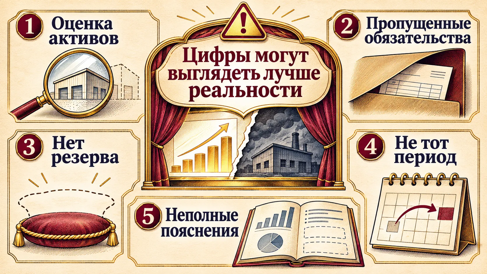
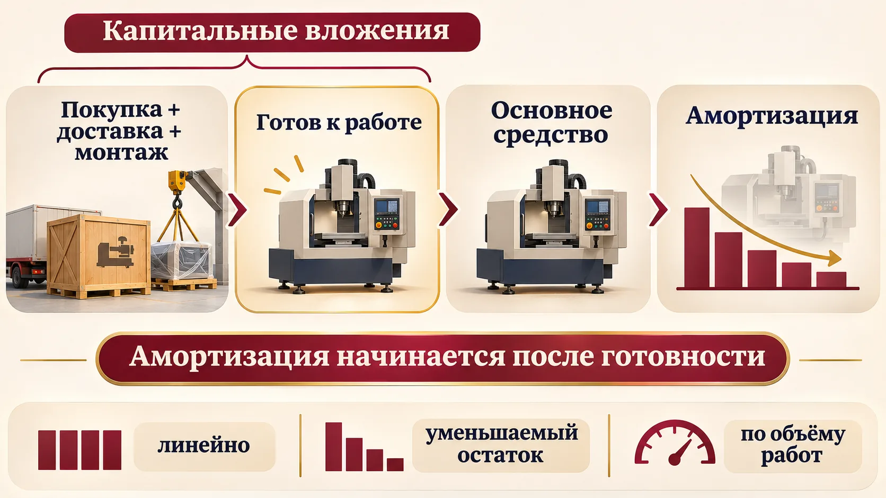
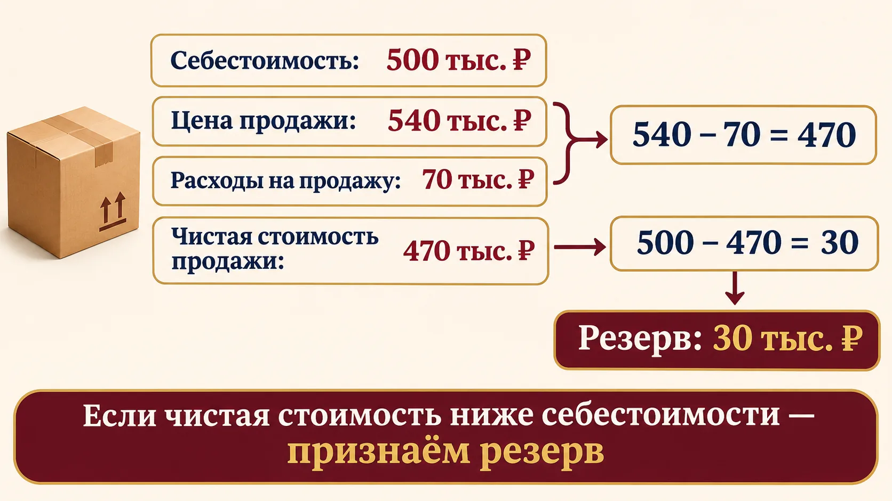
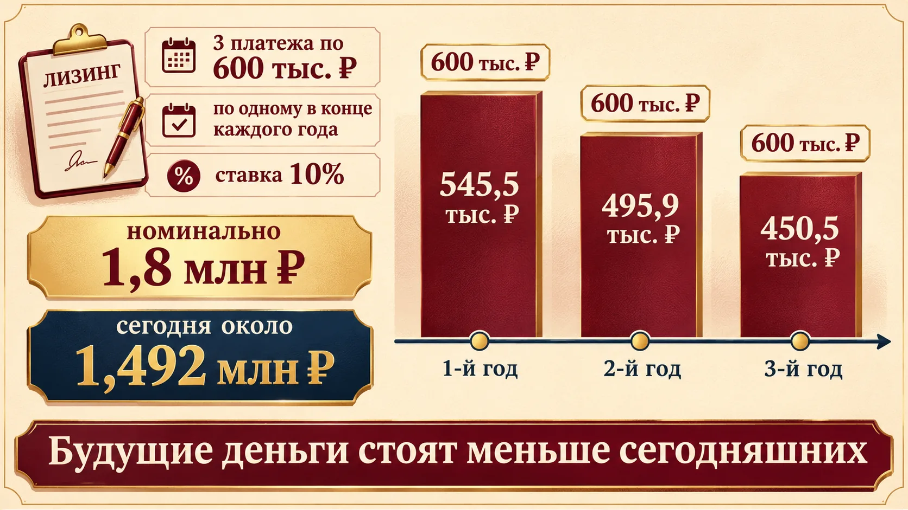

1. Отчётность — панель сигналов

В лекции разбираются пять распространённых искажений: неверная оценка активов, неотражённые обязательства, отсутствие резервов, неправильный период признания доходов/расходов и неполные пояснения. Баланс показывает часть проблем сразу; динамика денег и сроки долгов — другую часть.
🛠 Тренажёр: хватит ли оборотных активов?
Изменяйте суммы и смотрите, как меняется отношение оборотных активов к краткосрочным обязательствам. Это ориентир для анализа, а не универсальная оценка финансового здоровья.
Коэффициент:
Что входит в полный комплект?
Баланс, отчёт о финансовых результатах, отчёт об изменениях капитала, отчёт о движении денежных средств и пояснения. Пояснения — часть отчётности, а не необязательное приложение.
- Совпадают ли остатки счетов со строками форм?
- Проверены ли амортизация и резервы?
- Увязаны ли отчёт о финансовых результатах и регистры?
- Пояснения раскрывают существенные цифры и изменения?
2. Переход на стандарт — управляемый проект
- Сверить действующую учётную политику с требованиями стандарта.
- Оценить влияние на входящие остатки, капитал, налоги и сравнимость периодов.
- Утвердить решение и переходные положения приказом руководителя.
- Объяснить новые правила бухгалтерам и ответственным за документы/имущество.
- Проверить применение и раскрытие в отчётности.
3. Бухгалтерская служба и ежемесячный контроль
Выбор модели зависит от объёма операций, сложности бизнеса, сезонности, конфиденциальности и требуемого контроля. «Дешевле» не всегда означает «выгоднее»: руководитель всё равно отвечает за организацию учёта и должен понимать, кто и как проверяет результат.
🛠 Ежемесячный контрольный разговор
- Закрыт ли месяц? Если нет — чего не хватает и кто это принесёт?
- Есть ли расхождения между учётом, банком и складом?
- Каковы суммы и сроки дебиторской/кредиторской задолженности?
- Есть ли недостающие первичные документы или неотчитавшиеся подотчётные лица?
- Какие инвентаризации, отчётные даты или изменения стандартов приближаются?
Назначайте ответственного и срок на каждое действие.
4. Основные средства: от покупки до амортизации

Одновременно должны выполняться критерии: материальная форма, ожидаемое использование более 12 месяцев, экономические выгоды и стоимость выше лимита, установленного организацией в учётной политике. До готовности объекта к эксплуатации затраты на него остаются капитальными вложениями. Когда объект готов — стоимость переносится в основные средства, начинается амортизация.
В первоначальную стоимость включают необходимые прямые затраты: цену, доставку, монтаж и приведение в рабочее состояние. Управленческие расходы, простой, потери от брака и возмещаемый НДС не добавляют к стоимости объекта.
🛠 Тренажёр: сколько амортизируем?
Простой линейный пример без ликвидационной стоимости. Выберите параметры:
В год:
Стоимость распределена равными долями в течение срока.
Три способа, которые сравнивали на занятии
- Линейный: равная сумма по периодам.
- Уменьшаемый остаток: больше в начале, меньше позже.
- По объёму продукции/работ: зависит от фактической загрузки.
Расчёт также учитывает срок полезного использования и ликвидационную стоимость.
5. Запасы: себестоимость и резерв
Запасы — сырьё, материалы, товары, готовая продукция и незавершённое производство; в зависимости от назначения сюда могут относиться инструменты и спецодежда. Важны назначение объекта и срок использования.

Чистая стоимость продажи — ожидаемая цена за вычетом расходов на продажу. Если она ниже себестоимости, признают резерв под обесценение. Пример: товар стоит 500 тыс. ₽, ожидаемая продажа — 540 тыс. ₽, расходы — 70 тыс. ₽. Чистая стоимость — 470 тыс. ₽; резерв — 30 тыс. ₽. Если обстоятельства улучшаются, резерв восстанавливают.
6. Аренда и НМА: стоимость во времени и права

В общем случае арендатор признаёт право пользования активом и обязательство по аренде, рассчитанное по приведённой стоимости будущих платежей. В платеже есть проценты и погашение обязательства; право пользования амортизируется. Для некоторых договоров и организаций стандарт предусматривает исключения — их условия нужно проверять по актуальному тексту и закреплять в учётной политике.
🛠 Тренажёр: сколько стоят будущие платежи сегодня?
Упрощённая модель: равный платёж в конце каждого года. Сравните номинальную сумму и приведённую стоимость.
Номинальная сумма:
Приведённая стоимость:
На примере из занятия: три платежа по 600 тыс. ₽, в конце каждого года, при ставке 10% дают около 1,492 млн ₽ вместо номинальных 1,8 млн ₽. Будущая сумма оценивается с учётом времени и ставки.
Нематериальные активы
НМА не имеет материальной формы, его можно идентифицировать и контролировать; ожидаемый срок использования превышает 12 месяцев, а объект способен приносить выгоды. Примеры — программные продукты, сайты, домены, патенты и товарные знаки. Для программы за 360 тыс. ₽ на 3 года линейная амортизация в учебном примере — 10 тыс. ₽ в месяц.
7. Что сделать руководителю
Список хранит отметки на этом устройстве.
Квиз: проверьте понимание
Шпаргалка
Политика → документы → регистры → остатки → формы + пояснения
- Период закрыт? Сверки сошлись?
- Есть ли просрочка, пропущенная первичка, неподтверждённые активы/обязательства?
- Готов ли объект ОС, прежде чем включать амортизацию?
- Ниже ли чистая стоимость продажи запасов их себестоимости?
- Отражены ли право пользования и обязательство по аренде?